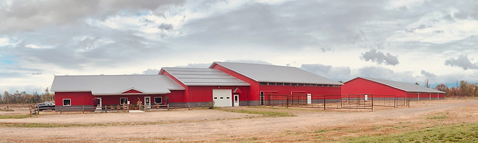
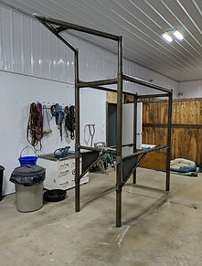
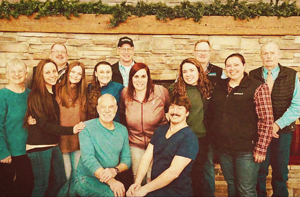
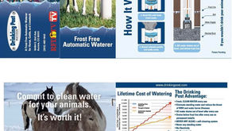
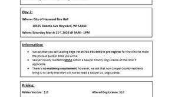

OUR VISION
To be the premier large and small animal veterinary services provider in Northwestern Wisconsin. Creating a "Perfect Practice" relationship with both our animal and human clients, to promote a lifetime of care.
Leading Edge Veterinary Services
Leading Edge Veterinary Services provides care to small and large animals in Northwestern Wisconsin. We take pride in providing all animals with exceptional and compassionate veterinary care.
The clinic site is conveniently located at N10120 County Hwy M in Springbrook, Wisconsin and has the ability to handle both small (dog and cats) and large animals (horses, goats, cows). Our large animal veterinarians also travel throughout Northwestern Wisconsin providing routine and emergency care for cattle, horses, small ruminants, pigs, poultry, and camelids.

To be the premier large and small animal veterinary services provider in Northwestern Wisconsin. Creating a "Perfect Practice" relationship with both our animal and human clients, to promote a lifetime of care.
We promise to provide ethical, exceptional, and compassionate veterinary care.
We commit to applying leading edge, scientific knowledge.
We benefit our community through:
We work to ensure client satisfaction with both the care their animal receives and the Perfect Practice customer service we provide.
Compassionate Care
Trust
Integrity
Teamwork
| Monday | 8:00am - 5:00pm |
| Tuesday | 8:00am - 5:00pm |
| Wednesday | 8:00am - 5:00pm |
| Thursday | 8:00am - 5:00pm |
| Friday | 8:00am - 5:00pm |
| Saturday | Closed |
| Sunday | Closed |
*For companion animal emergency services call
Allied Veterinary Emergency
715-529-5900
2809 Golf Road
Eau Claire, WI 54701
| Monday | 8:00am - 4:00pm |
| Tuesday | 8:00am - 4:00pm |
| Wednesday | 8:00am - 4:00pm |
| Thursday | 8:00am - 4:00pm |
| Friday | 8:00am - 4:00pm |
| Saturday | Closed |
| Sunday | Closed |
Limited emergency services available for large animal clients

Large Animal Hospital
Convenient shipping, right to your front door!
*must use a physical address, PO Boxes are not accepted



We accept Cash, Check, Debit & Credit cards and CareCredit and HelloRates patient financing.
*There is a 3% convenience fee applied to credit card transactions.*